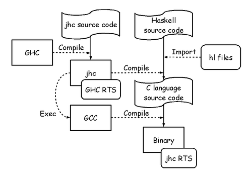

What is Ajhc?
Ajhc is a Haskell compiler, and acronym for the following:
- A fork of jhc
- An accelerator for jhc
- Metasepi arafura custum jhc
Why need Ajhc?
Jhc converts Haskell code into pure C language code running with jhc's RTS. And the RTS is written with 3000 line (include comments) pure C code. It's a magic!

Ajhc's mission is to keep contribution to jhc in the repository. Because the upstream author of jhc, John Meacham, can't pull the contribution speedy. (I think he is too busy to do it.) We should feedback jhc any changes. And also Ajhc aims to provide Metasepi project with sufficient functionality to develop arafura design.
Ajhc is, so to speak, an accelerator to develop jhc.

Photo: Copyright (C) 2007 Silke Baron All Rights Reserved.
Demo with Cortex-M3 board
The demo is running code that compiled with Ajhc on Cortex-M3 board. It blinks LED to show "HELLO WORLD" in Morse code. You can get the demo detail and source code from https://github.com/ajhc/demo-cortex-m3.
How to install
It's easy to install Ajhc with Cabal. And Ajhc supports running on Windows (experimental).
$ cabal install ajhc
$ ajhc --version
ajhc 0.8.0.1 (80aa12fb9b57622bba2f0e911d7ebc0c04ddb662)
compiled by ghc-7.4 on a x86_64 running linux
$ echo 'main = print "hoge"' > Hoge.hs
$ ajhc Hoge.hs
$ ./hs.out
"hoge"
Usage
Please read Ajhc User's Manual (in Japanese).Contact
Ajhc is developed by Metasepi team. Dive into https://github.com/ajhc to join us!